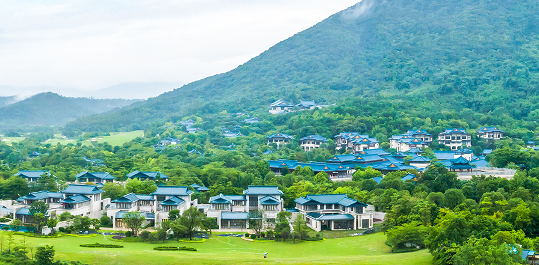

关于从都庄园
从都国际庄园落成于2011年。其整体建筑风格“取意东方，道法自然”，依山势而建，注重人与自
然的和谐，汲取中国汉唐时期的建筑灵感，结合现代设计之精粹，气魄雄伟，雅致沉稳，展现着
独特的东方建筑美学与人文情怀。庄园涵括了休闲度假、健康管理、度假居住、运动社交、文化
博览等五大功能板块，特别是从都国际论坛作为世界了解中国的窗口、中外交流的高端平台，成
功举办过多次高规格国际论坛，已成为加深理解、推进共识、合作共赢的国际高端交流平台。
